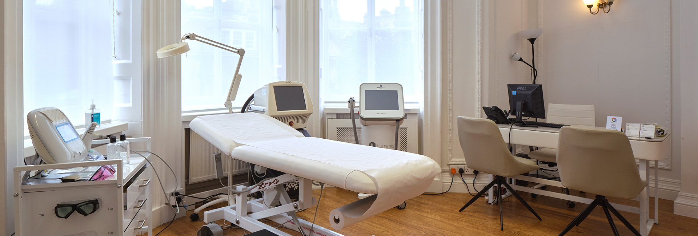
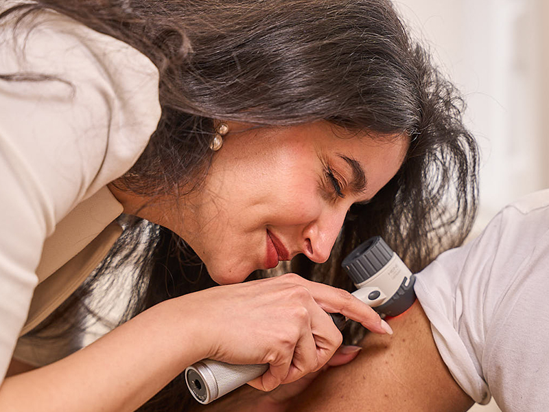

Founded over 19 years ago by Dr Sunil Chopra, the London Dermatology Centre is a leading private dermatology clinic in London, providing consultant-led medical, surgical and cosmetic skin care. Our team of experienced dermatologists diagnoses and treats a wide range of skin conditions, combining evidence-based medicine with personalised patient care. Located in one of London’s established medical districts, we are committed to delivering high-quality dermatology for both medical and aesthetic needs.
Our consultant dermatologists are all highly experienced specialists trained at major London teaching hospitals. They provide expert care across the full spectrum of medical, surgical and paediatric dermatology, diagnosing and managing a wide range of skin, hair and nail conditions. Combining strong academic foundations with extensive clinical experience, our dermatologists take a comprehensive and patient-centred approach to care. When arranging an appointment, our experienced team will help match you with the most appropriate dermatologist or clinician based on your individual needs.
At The London Dermatology Centre, our aesthetics team offers advice on skincare regimes and cosmetic treatments, including fillers, anti-ageing procedures, laser hair removal, and non-surgical ultrasound liposuction (Liposonix). Whether it is a medical condition or a cosmetic consultation, our team of experts is here to meet your needs.

During your consultation with our dermatologist or clinician, a suitable treatment plan will be discussed for your condition, and medications may be prescribed if necessary. Conveniently, medications can be dispensed from our in-house pharmacy, allowing you to start your treatment immediately. If a mole or lesion raises concern, a biopsy can be performed on the same day, with results available within three days.
We work closely with laboratories that use the latest technologies to test and analyse your specimens. The laboratory for blood tests is just a few doors down from our clinic, with results typically obtained within 1-2 days.

At The London Dermatology Centre, we use the latest testing methods for allergies, skin cancer, or mole monitoring. We offer patch testing to help diagnose your skin condition by identifying allergens in everyday products that may cause reactions. We also perform biopsy and blood tests, working closely with advanced laboratories to ensure quick processing of your tests.

The initial consultation is an important part of the diagnostic process. All patients who visit The London Dermatology Centre begin their treatment process with an initial consultation. The consultant dermatologists require you to come in for this 20 to 30-minute appointment to address all of your dermatological concerns. The next step is to examine your skin thoroughly to formulate a diagnosis and provide you with a personalised treatment plan. Some conditions require further testing to be diagnosed accurately. Here at The London Dermatology Centre, we are able to provide a range of medical tests including blood tests, swabs, allergy testing, patch tests, as well as several methods of biopsy.

Testing can almost always be done on the same day as your appointment, with results available shortly after. The length of time you will have to wait for your results depends on the test you have done. For example, some blood test results are reported back to our clinic on the same day you have the blood taken, whereas the mycology swab test takes three weeks to process. Our dermatologists take time to review all results before your next appointment.

Here at The London Dermatology Centre, we are able to biopsy skin lesions for pathological analysis on site. Our state-of-the-art treatment suite enables our dermatologists to regularly perform biopsies of lesions such as moles. The samples are then sent off to our partner laboratory, where a group of experienced pathologists process and examine each specimen to produce a report for our dermatologists.

It is our aim to start your treatment from your very first appointment with us. Here at The London Dermatology Centre, we have our pharmacy on site so that medications can be purchased directly from us at a competitive price. This also means that your treatment plan can be started straight away from your first appointment without having to wait for a pharmacy to process your prescription. We can also offer a number of procedures on the day of your appointment such as cryotherapy and other procedures to remove unwanted lesions such as cysts, moles, and skin tags.

For some patients, a follow-up consultation will not be necessary. However, for many conditions, it will be necessary to see the doctor again to check the progress of your condition after following the treatment regimen, to have ongoing treatment, to alter your treatment regimen based on test results, or for your own reassurance. Some conditions, such as eczema or psoriasis, may require a follow-up appointment at a later date due to a flare-up. These types of appointments cannot always be planned, which is why we make it as easy as possible for you to book another appointment with us by phone, email, or through our website. Some medications require follow-up to monitor for side effects, dosage, and treatment progress. Your dermatologist will be able to tell you whether you need to return to the clinic for a follow-up appointment.
The London Dermatology Centre is delighted to offer aesthetic consultations from £60 with one of our experienced aesthetic practitioners. These appointments are around 30 minutes in length. The consultation will usually consist of a comprehensive medical history, a thorough examination of your skin or treatment area, and a treatment plan. All of our aesthetic practitioners take great care to understand your concerns and assess any underlying causes. During your appointment, one of our aesthetic practitioners will discuss with you all that you are concerned with and what you would like to achieve. You will be guided through the different treatment choices, pros, cons, and alternatives. This appointment provides the practitioner with the opportunity to work with you to create a personalised and appropriate treatment plan.

Our aesthetic practitioners are a team of nurses and doctors who specialise in non-surgical aesthetic treatments such as hair reduction and skin rejuvenation. Here at The London Dermatology Centre, we offer a complete range of non-surgical cosmetic treatments. Whether you are looking for hair removal, non-surgical rhinoplasty, or just to refresh and rejuvenate your appearance, our experienced doctors and aesthetic nurses will provide you with expert, professional service.
Some treatments will require several sessions for the best results, such as laser treatments (Fraxel, Clear + Brilliant, and IPL), while others may be one-off treatments that you come back for when you feel you need a top-up, such as dermal fillers.
At The London Dermatology Centre, we are committed to making top-quality dermatological care available to all.
To support this commitment, we accept a variety of insurance plans, ensuring your path to improved health is smooth and straightforward. Our clinic is dedicated to helping you manage the financial details, so you can concentrate on what’s most important — your well-being.


The London Dermatology Centre is situated on Wimpole Street, next to world-renowned Harley Street where the heart of medical excellence is in Central London. We are easily accessible from all around the UK and for overseas patients.
We all at The London Dermatology Centre look forward to welcoming you to our clinic to treat and look after your skin needs.
Monday - Friday: 9.00 AM - 5.30 PM
Saturday & Sunday: Closed
69 Wimpole Street,
London W1G 8AS.